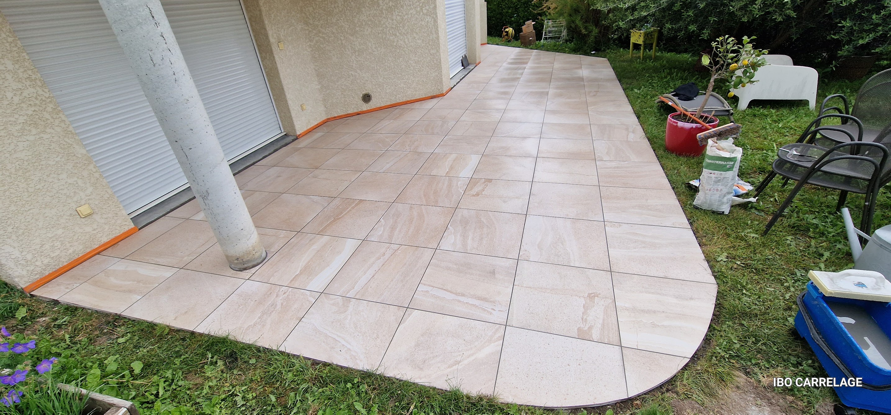
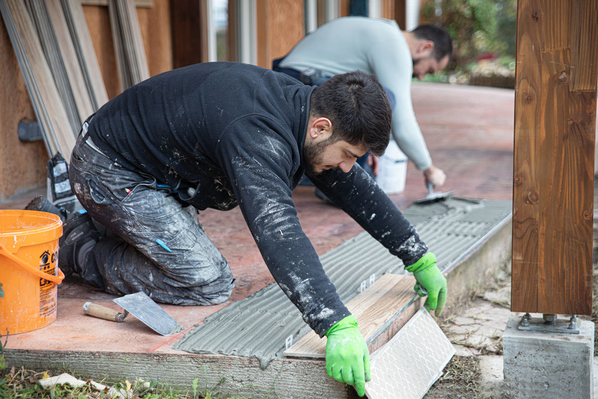

1. Pose de Dalles sur Plots Réglables (20 mm)
Idéale pour terrasses sur étanchéité, balcons, toits-terrasses et plages de piscine : mise à niveau millimétrée par plots réglables, drainage naturel des eaux de pluie entre les dalles, accès facile aux réseaux techniques et démontabilité immédiate sans démolition.
2. Pose Collée Extérieure & Découpes Sur Mesure
Sur dalle béton existante avec pente maîtrisée : application d'un primaire d'accrochage, mortier-colle extérieur haute déformabilité (C2S1/S2) résistant aux cycles gel/dégel alpins, découpes arrondies ou en onglet sur margelles et nez de marches.